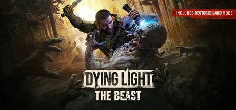

消逝的光芒系列独立资料片，以 Kyle Crane 为主角的开放世界生存 FPS。


想象一片Harran 病毒爆发后数年的末世——但镜头不再在中东烈日下，而是切到欧洲被铁丝网与河流隔离的乡村「Castor Woods」。你穿过松木镇区、被遗弃的城堡、伐木厂、葡萄园、铁路隧道、玉米地——白天像田园牧歌的旅游明信片，太阳一落山变成丧尸狩猎场。晾衣绳在风里飘、教堂钟在夜里响、葡萄藤爬上倒塌的拖拉机。Techland 把波兰乡村真实地貌缝进末世里——这一作走向独立发售，不再是 2 代 DLC，而是一代主角的回归之作。
你扮演Kyle Crane——初代主角，被某神秘组织囚禁实验多年，体内 Harran 病毒被强行培育成可控状态。你逃脱后流落 Castor Woods，遇到幸存者社区与残暴反派Baron 男爵。新机制 The Beast 让 Crane 可以切换成半丧尸狂暴形态——双臂变形、力量爆表、痛击成群丧尸，但每次释放都让他离人性更远。白天玩跑酷、夜里玩生存、绝境放野兽。
那次你第一次在夜里被 Volatile 群体追上铁路天桥、UV 手电筒电池见底、按键释放 Beast Mode 把六只丧尸打成血雾的瞬间，Techland 把第一人称跑酷+末日动作做到系列十年新巅峰——你打的不是怪，是「人还是兽」这道一代留下的旧题；那场你在葡萄园教堂看到 Baron 男爵处决幸存者的桥段——欧式末世让你明白「换个地图，人性还是这副样子」；那次你在被囚禁的实验档案里读到自己十年来发生过什么的对话节点，回归不再是宣发噱头，是 Crane 自己的执念。这不是关于打败丧尸的故事，是「Kyle Crane 还是当年那个人吗」的故事——下一段夜路你要不要放出野兽？
末世乡村田园 × 跑酷昼夜恐怖，是 Techland 把欧洲（波兰/巴尔干）真实乡村地貌（松木镇、葡萄园、教堂尖顶、伐木厂、铁路隧道）和Harran 病毒末世跑酷恐怖（成群丧尸、UV 紫外线、夜行 Volatile、DIY 武器、第一人称翻墙蹬墙）反差融合在一代主角 Kyle Crane 回归 + Beast 野兽形态外壳里的混血美学。底色是《28 天后》× 罗梅罗活死人三部曲双重血统；变异在于把镜头从 Harran 烈日切到欧洲冷光线。
「丧尸末世+乡村田园+跑酷」视觉线跨越半世纪。1968 年乔治·罗梅罗《活死人之夜》定义现代丧尸电影母版——本作精神祖父之一。1978 年罗梅罗《活死人黎明》把丧尸做到末世社会隐喻巅峰。2002 年丹尼·博伊尔《28 天后》定义高速变异感染者品类——本作 Volatile 直接精神来源。1979 年乔治·米勒《疯狂麦克斯》定义末日 DIY 武器视觉母版。2015 年Techland 《消逝的光芒》初代定义第一人称跑酷+昼夜节奏品类骨架。2022 年Techland《消逝的光芒 2》把跑酷开放世界推到次世代工业级。2025 年《消逝的光芒：野兽》在 C-Engine 下登场——欧式乡村+一代回归+Beast Mode 把跑酷恐怖推到独立发售新阶段。
基于体验清单 · 审美偏好 · IP故事三维度综合选出
点击链接跳转到对应平台查看 · 仅整理外部链接